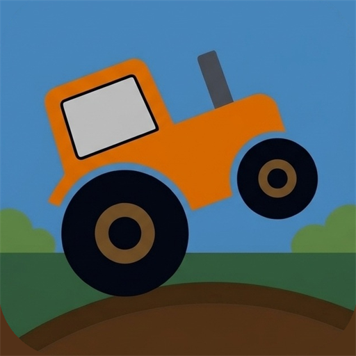

Detti
"Oggi diserbo sul campo dietro la cascina, due litri di prodotto." L'app capisce la data, il campo, il prodotto e la quantità.
Detti cosa hai fatto, fotografi la bolla del concime. Agrizen mette in ordine: date, campi, prodotti, quantità. Tu controlli e correggi.

Niente moduli da compilare la sera. Un gesto solo, sempre lo stesso.
"Oggi diserbo sul campo dietro la cascina, due litri di prodotto." L'app capisce la data, il campo, il prodotto e la quantità.
Fatture, bolle, patentini, certificati. La foto diventa una scheda, e il magazzino si aggiorna da solo.
Se ha capito male, lo sistemi con un tocco. Le correzioni sono normali: è un quaderno di lavoro, non un registro scolpito nella pietra.
Quello che ti impongono: registro dei trattamenti, scadenze, patentini. Agrizen lo forma dalle tue note, senza lavoro in più, e ti avvisa se manca qualcosa.
Quello che ti serve: quanto hai messo, quanto è piovuto, quanto hai raccolto, annata dopo annata. È lì che si impara a lavorare meglio.
Apri l'app dal telefono. Nel menu del browser scegli Aggiungi a schermata Home: comparirà il trattore tra le altre app. Alla prima apertura ti chiede la posizione, per il meteo. Puoi dire di no.
Senza account funziona tutto, ma i dati restano solo su quel telefono. Con l'account (email o Google, niente password) il quaderno viene copiato al sicuro e lo ritrovi se cambi telefono.
Tocca Scrivi, in basso al centro. Detta o scrivi cosa hai fatto, come lo diresti a un collega. Se la data è oggi non serve dirla.
Da Acquisisci documenti fotografa una fattura o un patentino. Controlla cosa ha letto, correggi se serve e conferma.
In Quaderno di lavoro trovi tutte le note in ordine di tempo. In Analisi campagna ogni campo con la sua storia, e il confronto fra le annate.
Il quaderno sul telefono è gratis. Copia di foto e registrazioni sul server e uso in più persone della stessa azienda saranno a pagamento: i prezzi arrivano a breve. Chi prova adesso non paga niente.